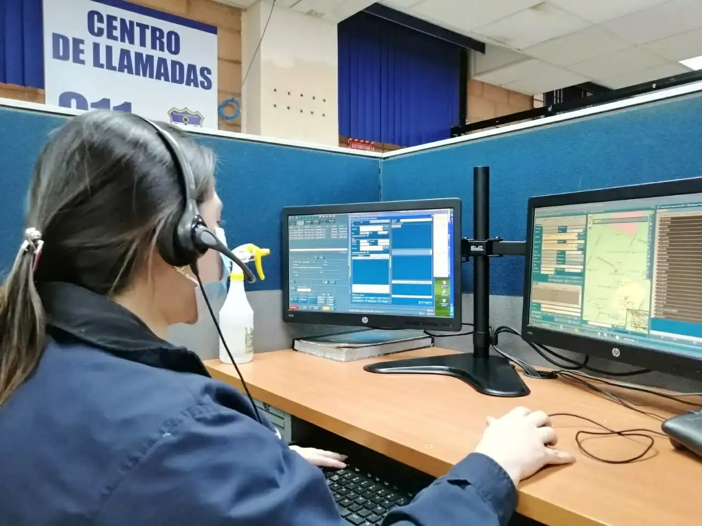
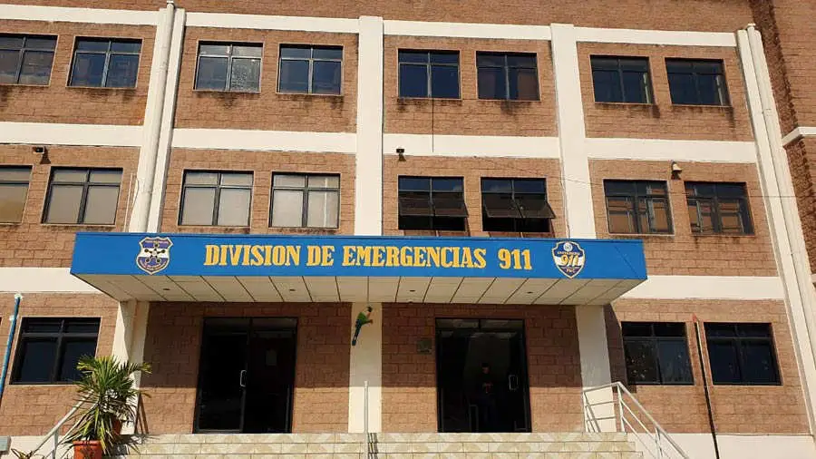
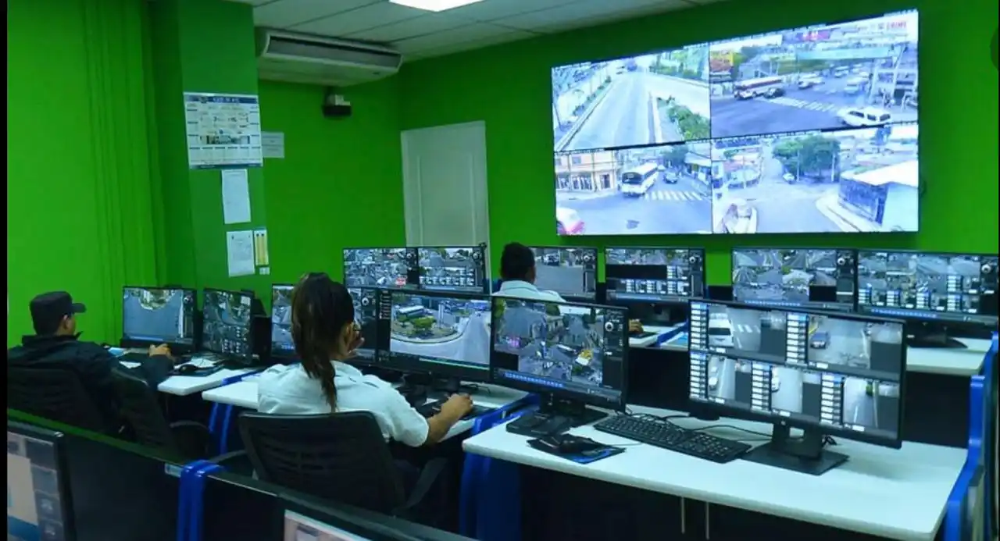
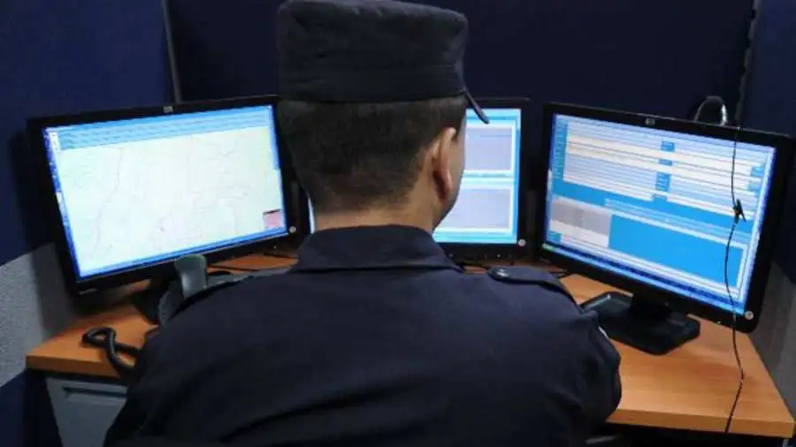

How the 911 Call Center Works
The 911 Emergency Call Center operates 24/7 to respond to urgent situations across El Salvador. Calls are received by trained operators who assess the emergency and dispatch the appropriate units—police, medical, or fire services.


Our Operators
911 operators undergo rigorous training in communication, crisis management, and emergency protocols. They are skilled professionals dedicated to saving lives and maintaining public safety.

